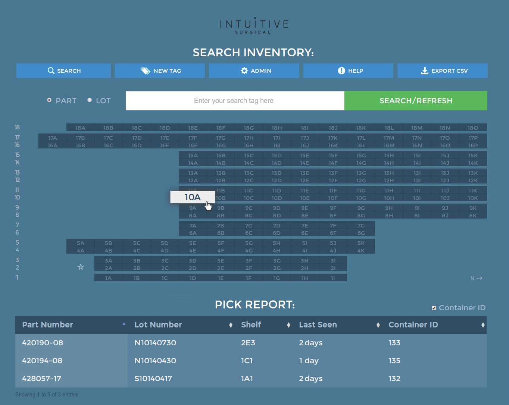
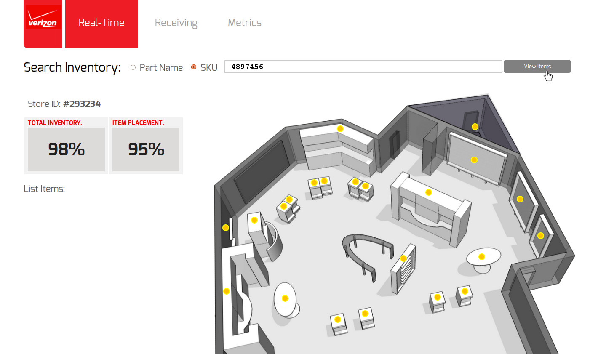
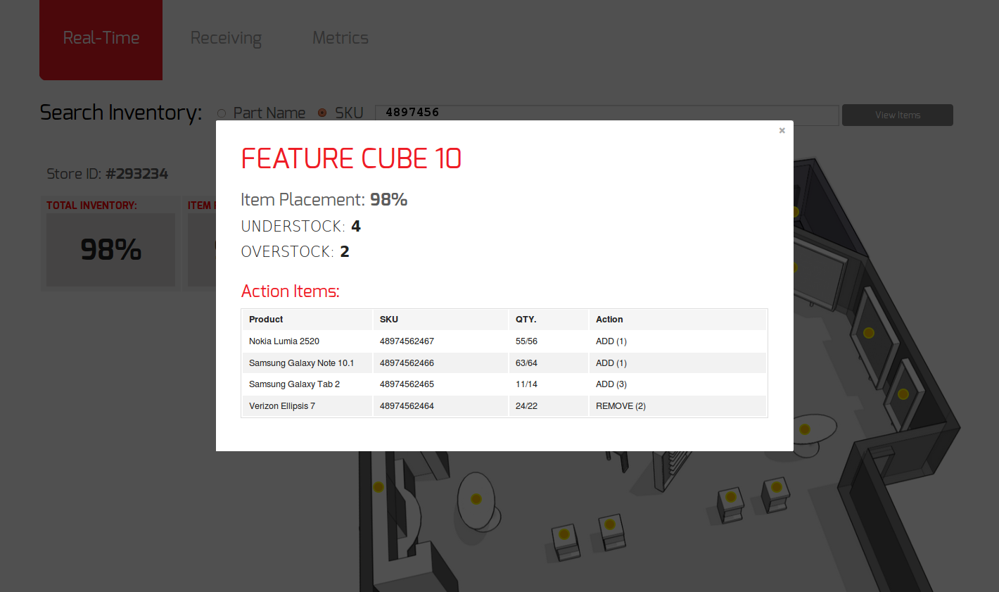

The Senitron RFID tag tracking system delivers a hands-free solution for tracking items in a warehouse or retail setting. This allows staff to stay on top of inventory levels 24/7 with extremely high accuracy. Clients included:
After installing hundreds of RFID tracking antennas at one of Intuitive's San Jose warehouses, a back-end developer and myself implemented a custom software application to track inventory for their da Vinci surgical robot system. I designed and developed the user interface and experience.

For Verizon, I designed and developed a dashboard to help retail locations keep track of in-store inventory.


American Apparel stores traditionally used a manual item count system which takes roughly 240 man-hours per month to keep track of per store, leaving lots of potential for human error. After installing custom-built software to track RFID tags, employees are now able to monitor inventory in real-time as well as locate specific items at any time.
For Kohl's department store I designed and developed a very simple inventory management dashboard as a proof of concept.